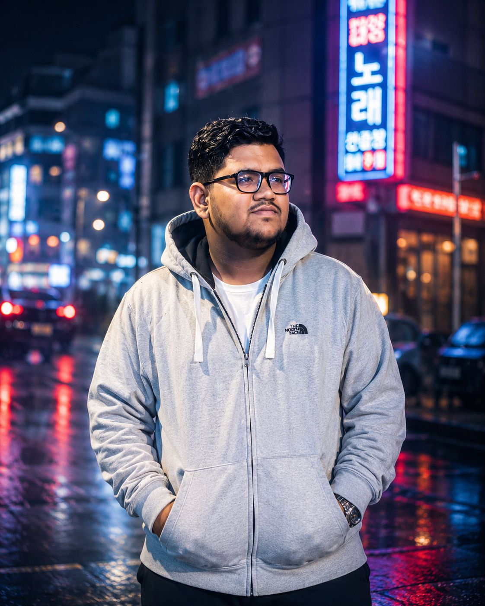

AILEAD INTELLIGENCE / 01
AI AUTOMATION · SOFTWARE
AI Client Acquisition Agent
An automation workflow to discover prospects and support outreach for digital-service businesses.
Explore repository ↗● BUILDING WHAT'S NEXT
Hello, I'm
CSE student based in South Korea. I research machine learning for health and cybersecurity, build useful software, and care about testing things properly.

ABOUT ME
I’m Muaz Ibn Kamal, a Computer Science and Engineering student from Bangladesh, now studying in South Korea. I’m interested in artificial intelligence, cybersecurity and software development, and I enjoy turning research questions into working solutions. I learn by building, testing and improving, and I’m always open to new ideas, collaborations and opportunities to grow.
Start with meaningful problems, not just technology trends.
Use experiments, benchmarks and documentation to evaluate ideas.
Turn technical learning into tools and systems people can use.
RESEARCH NOTEBOOK
A hybrid ReliefF-wrapper feature optimization framework with stacking ensembles for explainable breast cancer diagnosis.
AI FOR HEALTH · EXPLAINABLE ML
Circadian gene dysregulation as a cross-cohort predictor of immune checkpoint inhibitor response: a pilot study across melanoma and urothelial carcinoma.
COMPUTATIONAL BIOLOGY · PREDICTION
A cross-validated, resampling-aware evaluation of multiclass intrusion detection on UNSW-NB15 with systematic error diagnosis.
CYBERSECURITY · EVALUATION
SELECTED WORK
AI AUTOMATION · SOFTWARE
An automation workflow to discover prospects and support outreach for digital-service businesses.
Explore repository ↗CYBERSECURITY · ML
Intrusion-detection experiments on UNSW-NB15 with resampling-aware evaluation and error analysis.
View related work ↗AI RESEARCH · HEALTHCARE
Hybrid feature selection and explainable stacking ensemble for breast cancer prediction.
Read research overview ↗EXPERIENCE
Coordinated international student programs and partnerships, supported documentation and reporting, and helped plan academic and cultural exchange events.
Assisted with research and data analysis for ongoing projects and publications, and prepared reports, documentation and presentations.
Led IT and graphic design work: website updates, multimedia production and digital campaign support.
Created and edited photos, videos and graphics to grow the team's visibility on social media.
Organized gaming tournaments and events, worked with the executive team on initiatives, and promoted the society on campus and online.
Supported international student programs, partner communication and event execution.
Helped plan tech workshops, seminars and student development programs, and managed member communications.
TOOLS OF THE TRADE
Python · NumPy · Pandas · Model training · Evaluation
Python · C · Java · OOP · Algorithms · Data Structures
HTML · CSS · JavaScript · React · TypeScript · Firebase · Django
MySQL · PostgreSQL · MongoDB · Mongoose
Photoshop · Illustrator · Premiere Pro · After Effects · Canva
Git · LaTeX · Documentation · Draw.io · Lucidchart · Project management
EDUCATION
English for Academic Purpose · Major in Information & Technology
B.Sc. in Computer Science and Engineering
Higher Secondary Certificate · Science
Secondary School Certificate · Science
OPEN TO GOOD QUESTIONS
Research collaboration, SQA and software roles, or thoughtful technical conversations. Based in Uijeongbu, South Korea.
Start a conversation ↗